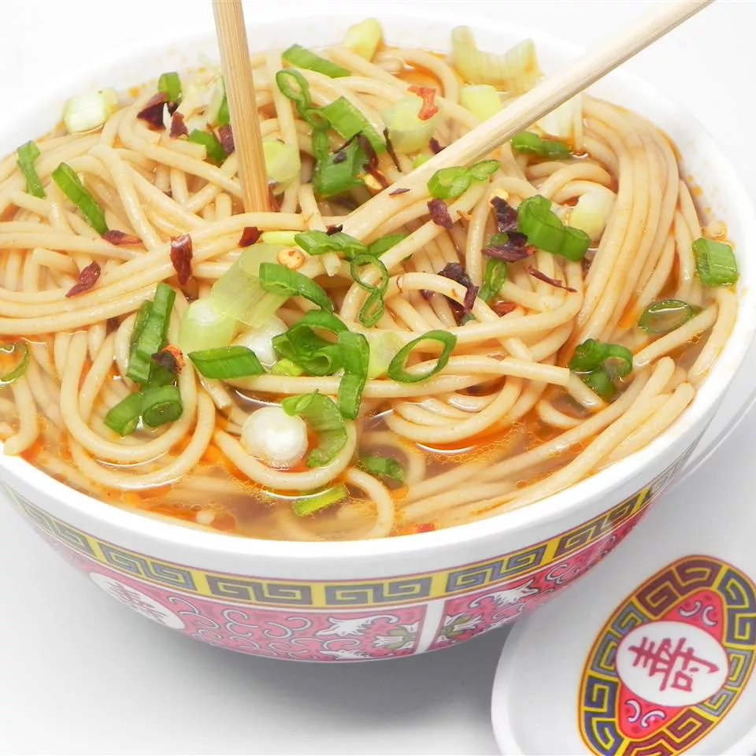

Ingredients
- 4 cups vegetable broth
- 4 cups water
- 2 tablespoons vegetable oil
- 1 tablespoon soy sauce
- 1 tablespoon sesame oil
- 1 tablespoon ground ginger
- 1 tablespoon Sriracha hot sauce
- 9 ounces soba noodles
Directions
- Step1: Combine broth, water, soy sauce, sesame oil, ginger, and hot sauce in a pot; bring to
a boil.
- Step2: Add noodles to boiling broth mixture and cook until noodles are tender yet firm to
the bite, 5 to 7 minutes.
about 30 seconds. Add eggs; stir quickly to scramble eggs with vegetables.
- Step3: Transfer noodles to serving bowls and top with desired amount of broth.
Note:
The nutrition data for this recipe includes the full amount for the broth. The actual amount consumed
will vary.